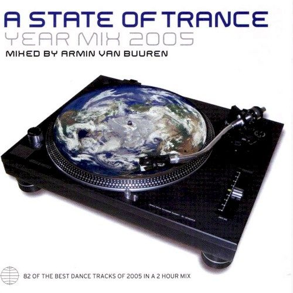

Various Artists - A State of Trance Year Mix 2005, Mixed by Armin Van Buuren


(Armada/Stomp)
I must confess my initial skepticism upon getting my hands on trance enigma Armin van Buuren’s new mix compilation. The latest in his acclaimed A State of Trance series, rather than your typical collection of tracks pinpointing the direction his sound is heading, it’s a nostalgic reflection on the year just passed. ASOT: Year Mix 2005 features a whopping 82 tracks over two hours, with basically every big progressive trance tune from 2005 you could care to mention. While you’d think such a project would come off sounding like a Jimmy Z megamix, Armin has again surpassed expectations to deliver an ‘Annual’ mix that’s a whole damn shot better than it has any right to be.
Progressive trance ascended to new levels in 2005: evoking all of the rich euphoria and heartfelt emotion heard in trance at its peak in popularity in the late 90’s, but imbued with the depth, sophistication and layered production techniques of progressive dance music. While on the surface it may appear formulaic, strip back the layers and you’ll see plenty has been done to push it in different directions, uncover new sounds and keep the energy flowing like it should. ASOT: Year Mix 2005 makes for the perfect reflection of this. Above and Beyond, Ferry Corsten, Kayou & Albert, M.I.K.E., Marco V – all the big names that made an impact last year are here.
Initial reservations aside, Armin deserves credit for how effortlessly he’s managed to cram 82 tracks onto a double CD. Using the full suite of wiz-bang Ableton Live effects and studio trickery, he cleverly goes about swapping the basslines, merging the melodies, switching the accapellas and oh-so-smoothly blending in all the different tracks over two hours. Each tune is tightly chopped down and edited back to its barest essence, with often as many as three or four tracks seamlessly overlapping each other at the same time.
It really is a technical marvel and there’s some superb digital mixing on display, meaning it transcends what could have easily become a rather bland Gatecrasher or Cream style ‘anthems’ compilation. It’s a deep and well thought-out release that’s nowhere near as bland as the hordes of ProTool compilations taking up space on the record shelves. Great trance mixing is all about blending the melodies, and Armin does it seamlessly and beautifully. The first CD is on more of a progressive tip while the second is driving peaktime bliss, and overall it carefully reveals all the different expressions of Armin’s sound: shifting from the deeper side of the genre, over to a little bit of tech and then onto trance of the sweeping euphoric variety.
While you’d think mixing the tracks in and out at such a fast pace would render the whole exercise pointless, massive props go out to Armin for pulling it off so impeccably. Considering the logistics of the project, it’s a remarkable achievement, and the quality of the mixing is often outstanding. It’s a joy to hear so many quality tracks on the one double CD, and it reminds you just what a great year 2005 was for progressive trance. Armin fans are keenly awaiting the 2006 edition of A State of Trance to see where he’s heading this year, but for the moment this makes for a great shot of nostalgia – it’ll jog your memory and reawaken your passion for trance. Very impressive.